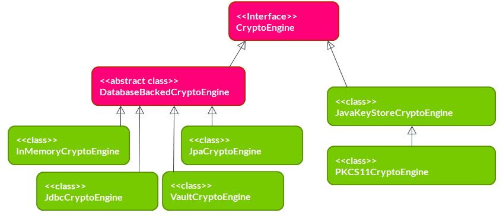
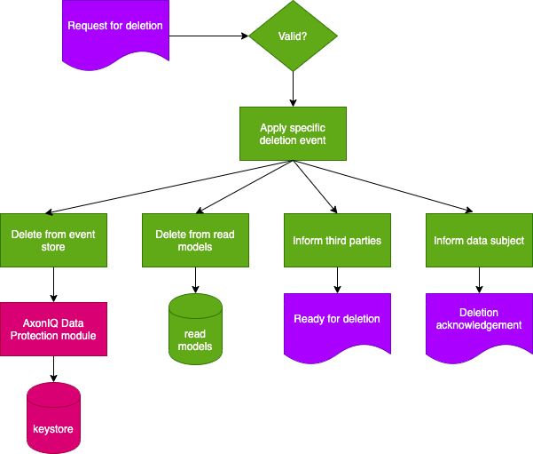

Crypto Engines
The CryptoEngine interface describes capabilities at the core of Axon Data Protection:
-
Retrieving an existing key (returning nothing if it isn’t there) - keys being represented as Java cryptography
SecretKeyobjects -
For a given id, either retrieving the existing key if it exists, or generating a new key, storing it and returning it if it doesn’t
-
Deleting a key
-
Obtaining a Java cryptography
Cipherobject for performing actual encryption -
Overriding the default length for new keys
Normally, only the key deletion operation would be used directly by application code. The other operations are used by the FieldEncrypter class.
The reason for coupling the management of keys with the creation of Cipher objects is that this allows support for a wide range of key management scenarios. One scenario is where keys are stored in a database and encryption is performed in the Java process itself. In this case, the two aspects could be fully separated. However, it is also possible to use a Hardware Security Module (HSM) in which case encryption has to take place on the device itself. In this case, a SecretKey object wouldn’t actually hold any key material, but just a reference to the key on the HSM. This makes the key management and Cipher functionality closely related.

The module has one abstract class implementing CryptoEngine, and 6 concrete classes shown in the diagram above.
InMemoryCryptoEngine
Keeps the keys in a local HashMap. This is useful for writing unit tests, but not for using it with any production data.
@Bean
public CryptoEngine cryptoEngine() {
return new InMemoryCryptoEngine();
}JpaCryptoEngine
Uses JPA to store keys in a relational database. As its constructor arguments, it accepts an EntityManagerFactory and optionally a JPA-mapped class used to store keys. This class must implement KeyEntity. If the class is not specified, it will use DefaultKeyEntity. Of course, the class provided to the constructor must be present in the persistence unit managed by the EntityManagerFactory. The JpaCryptoEngine will manage its own transactions so it doesn’t need any reference to a transaction manager, and the persistence unit must have RESOURCE_LOCAL transaction type.
@Bean
public CryptoEngine cryptoEngine(EntityManagerFactory entityManagerFactory) {
return new JpaCryptoEngine(entityManagerFactory);
}JdbcCryptoEngine
Like the JpaCryptoEngine in that it stores keys in a relational database, but it uses plain JDBC instead of JPA. It needs a DataSource object as a constructor parameter. It offers default table and column names, which can be overridden by optional constructor parameters.
@Bean
public CryptoEngine cryptoEngine(DataSource dataSource) {
return new JdbcCryptoEngine(dataSource);
}VaultCryptoEngine
Stores keys in HashiCorp Vault. This has a number of interesting benefits: Vault offers encryption of keys, protected by a master key which isn’t stored anywhere. The master key can be provided manually on startup, but can (in the enterprise version) also be obtained through a HSM, through AWS KSM or through Google KSM. The individual keys can be stored in a wide range of configurable backends. Using HashiCorp Vault, you can achieve a high level of key security while still maintaining high performance.
Vault client
HashiCorp Vault has an HTTP API. There is no official Java client library available. (The only official ones are for Go and Ruby.)
Axon Data Protection doesn’t use a Vault community Java library, but instead uses OkHttp as a fast, lower-level HTTP client. Therefore, the module has an optional dependency on OkHttp, which must be present for using the VaultCryptoEngine. The constructor of VaultCryptoEngine requires an OkHttpClient object. OkHttp is performance-optimized, and a single OkHttpClient can be used across all threads. This makes it a great fit for the Axon Data Protection use case.
@Bean
public CryptoEngine cryptoEngine() {
OkHttpClient httpClient = new OkHttpClient.Builder()
.connectTimeout(10, TimeUnit.SECONDS)
.readTimeout(30, TimeUnit.SECONDS)
.build();
return new VaultCryptoEngine(
httpClient,
"https://vault.example.com", // Vault server address
"s.your-vault-token", // Vault authentication token
"secret/data/" // Path prefix for keys
);
}Vault policy
An essential operation for Axon Data Protection is to store a new key if and only if no key is stored yet for the key identifier. On a relational database, this can be implemented easily by create a unique constraint for the key identifier: an INSERT on an existing identifier will then fail. On Vault, this is not possible. POST and PUT calls are treated exactly the same, and in both cases will result in either a create or an update, depending on whether the entry was already there. This does not fit well with Axon Data Protection. The way to solve this is to properly using Vault authorizations.
|
The |
Example policy:
vault policy write axon-dp - <<EOF
path "secret/data/*" {
capabilities = ["create", "read", "delete"]
}
path "secret/metadata/*" {
capabilities = ["list", "read", "delete"]
}
EOFVault token
When making calls to Vault, Axon Data Protection will authenticate by providing a token in the X-Vault-Token HTTP header. It is up to the application to obtain such a token and provide it to the VaultCryptoEngine. Vault supports a wide range of authentication methods to obtain a token.
A token must be provided when constructing a VaultCryptoEngine, but may also be updated at any point using the setToken method. Since tokens have limited timespan, applications may need to call this method periodically to refresh the token.
|
The |
JavaKeyStoreCryptoEngine
Uses a Java cryptography KeyStore implementation to store its keys. It will examine the given KeyStore for its provider, and then obtain a KeyGenerator and Cipher object from this provider as well. Please note the default Java KeyStore implementation used for instance to store certificates for a web server, is totally unsuitable for this particular application. The main reason why this class exists is as a stepping stone to implement the PKCS#11 implementation.
PKCS11CryptoEngine
Supports HSMs using the PKCS#11 standard through the SunPKCS11 JCE provider. It needs a PKCS#11 configuration (full file path) and a password as constructor arguments. It will then try to instantiate the PKCS#11 provider, and open the keystore using the password. (And if successful, it will delete the password for security reasons.)
Safety of concurrent access
When reading keys, CryptoEngine safety of concurrent access is trivial. In the case of generating a new key, there is a real risk: two parallel processes may both find a key to be absent, generate one, save it, and then start encrypting fields with it. The second key to be saved would overwrite the first key, causing data loss because data encrypted with the first key will now no longer be decryptable. It will vary from application to application whether this is a realistic scenario.
Looking at the implementations provided:
- InMemoryCryptoEngine
-
Only operates in a single process, reducing the general concurrency problem to a simpler thread-safety problem. The
InMemoryCryptoEngineimplements this safety by using the atomic operations ofConcurrentHashMapin its implementation. - JpaCryptoEngine
- JdbcCryptoEngine
-
These implementations are designed to be used on multiple nodes, pointing to the same database. They are fully safe for concurrent access, and use database transactions to implement this.
- VaultCryptoEngine
-
This implementation is designed to be used on multiple nodes, pointing to the same Vault server/cluster. This is fully safe for concurrent access.
- JavaKeyStoreCryptoEngine
- PKCS11CryptoEngine
-
These implementations are not safe for concurrent access. If this is a realistic scenario for your application, additional safeguards are necessary.
Key deletion and right to be forgotten
All engines support key deletion, which is essential for GDPR’s "right to be forgotten":
@Service
public class DataDeletionService {
private final CryptoEngine cryptoEngine;
public void deletePersonalData(String dataSubjectId) {
cryptoEngine.deleteKey(dataSubjectId); (1)
}
}| 1 | Deleting the key makes all encrypted data unreadable |

After key deletion:
-
Encrypted data still exists in events
-
But it cannot be decrypted
-
Effectively "forgetting" the data subject